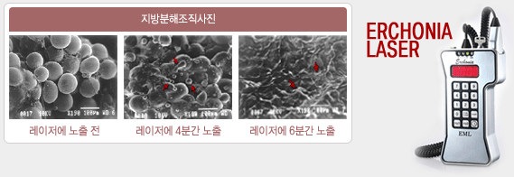
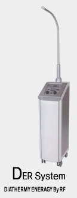
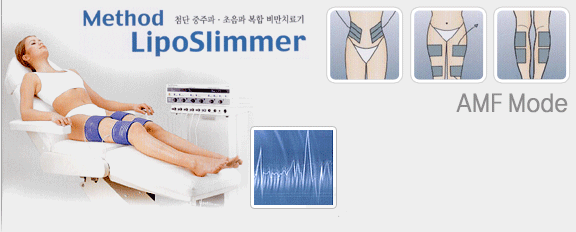

| |
어코니어
지방 융해 레이져 지방흡입술 및 부분 비만 시술 |

중요한 것은 지방만 제거하는 것이 아니라 바디라인을 살리는 것입니다.
 어코니어 레이져의 특징
어코니어 레이져의 특징
1. 지방을 태우는 것이 아니라, 녹이는 레이져입니다.
2. 짧은 시간내 지방 세포를 액화시켜 지방흡입의 치료 및 수술 시간이 단축 되었습니
다.
3. 기존의 살쳐짐 현상이 현격히 줄어들어 바디라인이 아주 매끄러워 집니다.
4. 미국 FDA가 인정한 유일한 Cold Laser입니다.
5. 타 지방흡입에 비해 부작용(색소 침착, 붓는 증상, 피부가 울퉁불퉁해지는 증상)과
통증이 거의 없습니다.
저는요 전신마취 지방흡입술은 너무 무서워서
그런데 어코니어 레이져는 어떻게 시술을 받나요? 걱정마세요! 누구에게나
전신마취 수술은 부담스럽기 마련입니다.
저희 아이리스에서는 어코니어 지방 융해술과 전문적인 관리 프로그램으로 이를
해결하고 있습니다.
이 시술은 당일 간편하게 방문하여 지방 융해를 받고자 하는 부위에 특수 용액을 주입하여
레이져를 조사하는 방법으로 시술시 통증이 거의 없습니다.
시술 후 저희 웰빙날씬 센터에서 운동 요법과 기타 관리를 병행하면 더욱 더 효과가 있
습니다. 10일에 한번씩 총 4-5회 실시 하게 되며 전혀 일상생활에 지장을
주지 않습 니다. 1회 시술은 30분 정도가 소요됩니다.
바쁜 직장인이나 수술에 공포가 있으신 분, 최근에는 예비 신부님들의 부분 관리(아랫 배,
옆구리, 팔뚝, 다리 등)에 아주 많이 사용되고 있습니다.
| |
새로운
성능의 지방 흡입 & 미세 지방 이식기 - Lipokit 시술 |
국소마취에 의한 미세 지방이식
지방 흡입술을 하면서 동시 미세지방을 이식할
수는 없나요?
네 가능합니다. 저희 아이리스에서는 지방흡입기, 원심 분리기, 주입기등 기존의
따로 따로 있는 기기들의 불편함을 새롭게 통합한 “라이포킷트”를 도입하여 시술을 하고
있습니다.
Lipokit으로 가능한 수술의 종류
주름제거술
- 입가 주름, 눈주위 주름, 볼 주름, 미간주름, 이마 주름
액취증 제거술
입술 확대
이마 성형
| Lipokit |

 원심분리기 1대로 지방흡입 가능
원심분리기 1대로 지방흡입 가능
Free Oil 자동분리 기능(특허등록)
공압으로 튜메슨트 주입이 가능해서
빠른 주입과 편하게 시술 할 수 있다.
대용량의 지방 분리 가능
|
|
vs |
| 일반
원심분리기 |
단순한 원심분리의 기능 수행
Free Oil 분리 할 수 없다.
일반 주사기로 튜메슨트 주입을
하므로 시간이 오래 걸린다.
10cc 이하 지방 분리 가능
|
|
| |
한
차원 업그레이드 된 전문 비만, 체형 클리닉 운영 |
저희 아이리스에서는 특별히 아이리스 웰빙 날씬 센터(비만, 체형클리닉)를 따로 운영하여
보다 더 전문적인 의료진과 비만관리사들로 구성이 되어 일대일 맞춤 치료를 하고 있습니다.
우선 체중이 많이 나가는 자신의 비만을 식이, 운동, 관리, 시술, 약물 요법등 효과
적 인 방법으로 체중 감량을 하고 있으며, 보다 나은 몸매를 위해서 노력하시는 분들에게는
다양한 시술과 수술을 통해서 최고의 만족을 드리고 있습니다.
LPG 엔더몰로지 -
전신을 시술하는 데 약 35분이 걸리며 일주일에 3회식 총 14회의
시술이 기본이며,
약 14회의 시술이 지나면 약 2인치의 허리사이즈 감소효과를 볼 수 있는 데 체중에는
큰 변화는 없으나,
운동과 식이요법을 병행한 사람은 더 많은 효과를 볼 수 있다.
 |
RF
고주파 -
기존의 전기 자극기들은 이온이나 저주파 및 간섭파를 이용하여 피부 표피 또는
근육을 자극하는 관리방법을 사용하나 RF system은 생체열(심부열) 에너지를
이용하여 인체 내 외부를 함께 관리 합니다.
전자요법 중에서도 가장 하이텍크닉에 속하는 RF system은 인위적으로 생성된
생체 열을 표피가 아닌 몸 안의 세포에 직접 작용시켜 세포의 노화 억제와 노화주기를
연장 시키는 효과를 나타냅니다.
혈액순환이라는 것은 신 개념 비만치료에 있어서는 가장 중요한
것이다.
혈액순환이라는 것이 잘 안되면 지방분해가 되어도 잘 배출될 연결 통로가 없어지는
것과 마찬가지이므로 항상 혈액순환이 원활히 될 수 있는 방법을 연구하고 생활속에서
스트레스를 받지 않도록 노력하는 것도 중요하다. |
중저주파 -
늘어진 복부, 처진 둔부, 가슴, 허벅지, 종아리 등에 탄력 있는
몸매 재생에 탁월한 효과가 있다.
특수파의 운동과 휴식의 적절한 배열로 요요현상 방지, 몸 전체의 균형적인 Balance와
탄력을 증가 시킨다.
중저주파에 의해 근육세포와 지방세포가 긴장하게 되며 긴장된 지방세포를 특수 파동으로
자극하여 파괴시키는 효과를 나타낸다.
초음파 -
지방분해 초음파는 지방세포를 파괴시키고, 림프계화 혈관계의 흐름을
원활하게 해준다.

아로마테라피 -
특성
* 적외선 온열 찜질효과 * 바이오베개 * 다양한 소재(옥, 세라믹, 황토, 숯...)
* 원적외선 효과
특징
* 에너파워 적용, 압축된 세라믹, 숯, 황토 등으로 기력보강, 향균효과, 향취효과,
음이온효과 발생, 바이오 베개를 사용하여 머리를 맑게 해줍니다.
* 램프에서 적외선을 방출하여 인체에 도움을 줍니다.
메조테라피 -
비만, 통증 미용, 노화방지 치료에 광범위하게 쓰여지는 치료법으로 각종 질환에 맞는
여러 가지 약물을 조합하여 메조건이라는 특수 장비를 이용하여 통증 없이 치료할 수
있는 방법으로, 소랴의 약물을 사용하므로 경제적이고 부작용의 걱정이 없다.
지나친 영양과다가 비만 부른다
비만은 주로 지나친 영양 섭취와 운동부족으로 야기됩니다. 간혹 내분비 계통의 질환과
유전적 요인이 비만을 부르기도 하지만, 많이 먹고 쓰지 않아서 생기는 에너지 과잉이
비만을 유발하는 대개의 경우입니다.
또한 비만은 몸 속의 조직중 지방 조직과 연관이 깊습니다. 따라서 비만 혹은 살이
쪘다는 것은 지방세포가 커졌거나 세포 수가 늘어난 것을 의미하게 됩니다.
그러나 세포수는 보통 사춘기때 결정되므로, 이 시기 이후에 나타나는 비만은 지방세포가
커져 생기는 경우라 봐도 무관합니다.
이때 지방은 본래 크기보다 최대 8 배까지 늘어난다고 합니다.
지방조직은 어떻게 축적되나?
우리 몸에 소화되고 남은 영양분은 우선 지방으로 변하여 피부 밑에 쌓이게 됩니다.
1 g에 9 cal의 열량을 저장할 수 있는 지방이야말로 가장 손쉬운 저장 창고이기
때문입니다. 그러다 몸에 영양분이 모자라게 되면 탄수화물이나 단백질의 순서로 에너지를
보충하게 되고, 이것도 모자라면 지방을 탄수화물로 바꿔 사용하게 됩니다.
그런데 지방은 쌓이고 쓰이는 것이 반복되는 것이 아니라 요긴할 때만 사용하기 때문에,
쓰지 않는 에너지는 계속 축적되어 결국 비만으로 발전하게 되는 것입니다.
뱃살이 안빠지는 이유
저장되는 지방은 몸 속에서 골고루 저장되는 것이 아니라 배와 허벅지, 허리 등에 집중적
으로 먼저 쌓이게 됩니다.
하지만 에너지로 사용되는 지방은 많이 축적된 곳에서 우선적으로 빠져나가는 것이 아니라,
얼굴, 팔 등에 축적된 지방에서 먼저 빠져 나간 뒤, 모자랄 경우에만 이들 부위의
지방 을 이용하게 됩니다. 따라서 축적된 지방에 비해 사용 빈도가 낮은 배, 허벅지,
허리 등의 지방은 계속 쌓이게 됩니다.
|